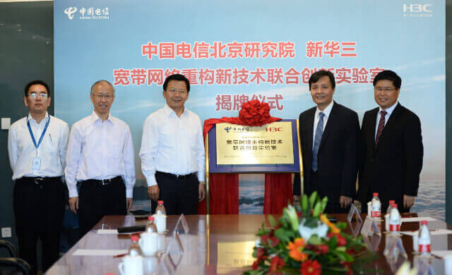
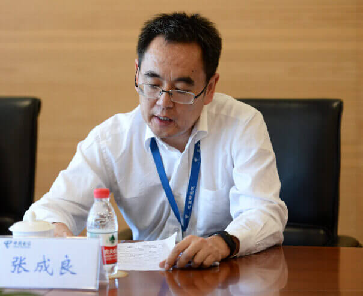
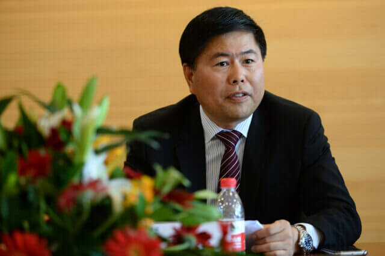
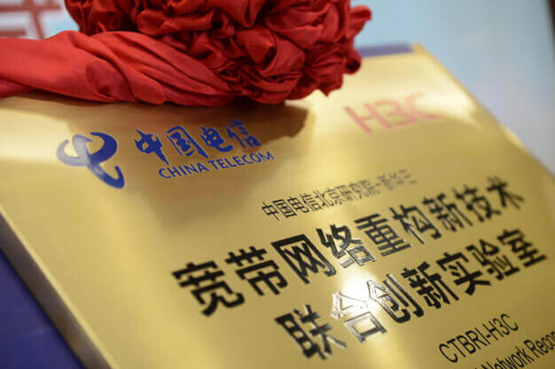

中国电信的创新引擎：“宽带网络重构新技术联合创新实验室”揭牌
9月8日，由中国电信北京研究院与新华三集团共同建立的“宽带网络重构新技术联合创新实验室”正式成立。
该实验室将充分利用双方资源，优势互补，推动新网络技术的研发，支持中国电信的网络重构和业务转型战略落地。中国电信集团公司副总经理真才基，中国电信北京研究院院长李志刚，新华三集团执行副总裁叶健等领导出席了揭牌仪式。
（从左到右：中国电信北京研究院副院长张成良、中国电信北京研究院院长李志刚、中国电信集团公司副总经理真才基、新华三集团执行副总裁叶健、新华三集团副总裁黄智辉，共同为实验室揭牌）
中国电信于今年7月正式公布了CTNet2025网络转型升级新战略，致力于成为领先的综合智能信息服务运营商。为此，中国电信将着力推进网络智能化、业务生态化、运营智慧化，实施网络、业务、运营、管理四大智能化重构。
（中国电信北京研究院副院长张成良致辞）
为了落实这一战略转型目标，中国电信北京研究院与新华三携手，共同组建了“宽带网络重构新技术联合创新实验室”。新华三作为领先的新IT解决方案供应商，在网络建设领域持续领先，在SDN/NFV等技术和应用实践方面有着诸多积累，并与中国电信一直保持紧密合作。中国电信北京研究院副院长张成良表示，在宽带网络发展前沿探索方面，中国电信与新华三均非常重视，也有着十分契合的诉求点，因此双方合作水到渠成。“宽带网络重构新技术联合创新实验室”的成立，将更好地实现双方资源优势互补，加快前沿技术创新与市场应用，成为中国电信前进道路上强大的创新引擎。
据悉，宽带网络重构新技术联合创新实验室将以“聚焦宽带网络，实现联合创新”为原则，依托中国电信北京研究院雄厚的科研技术实力、优越的实验室资源，结合新华三强大的产品方案创新及落地实施能力、丰富的市场资源，将双方科研合作成果转化，成为加速中国电信“领先的综合智能服务运营商”目标实现的倍增器。
（新华三集团副总裁黄智辉致辞）
新华三集团副总裁黄智辉表示，新华三是新网络的积极推动者，在SDN/NFV领域拥有丰富的落地实践，作为业内为数不多的在IT和CT领域均有雄厚实力的领导厂商，新华三能够以端到端的解决方案推动运营商的网络重构和业务转型。新华三将与中国电信通力合作，依托“宽带网络重构新技术联合创新实验室”的平台，推动新网络技术的发展和应用落地。
